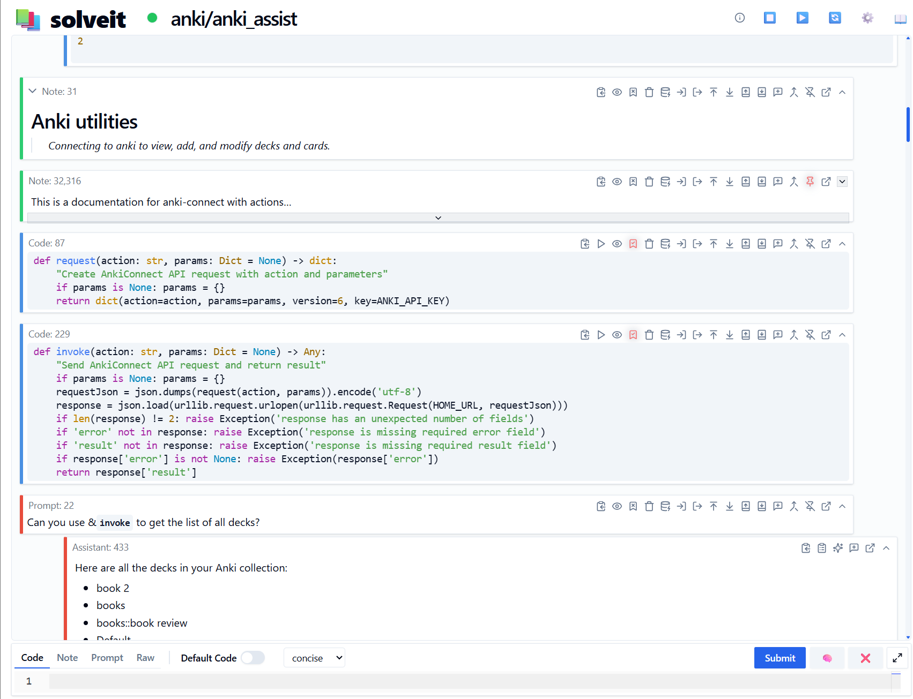
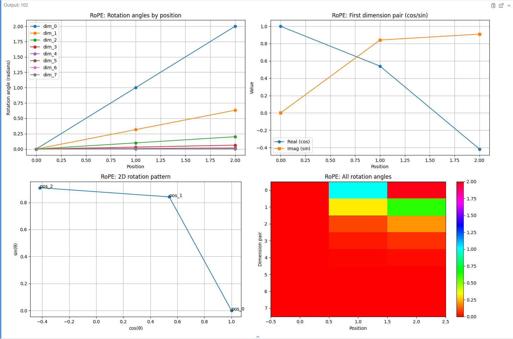
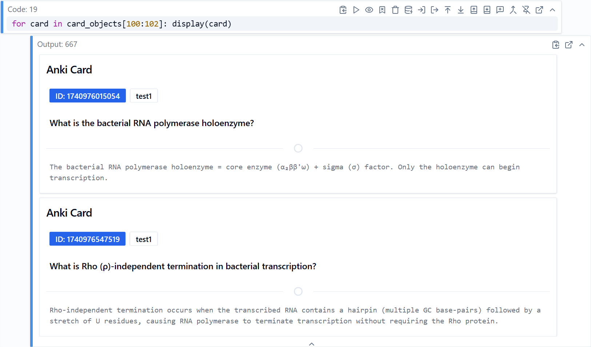
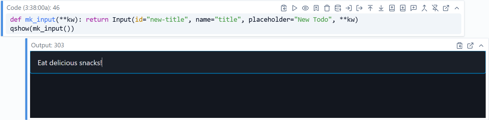
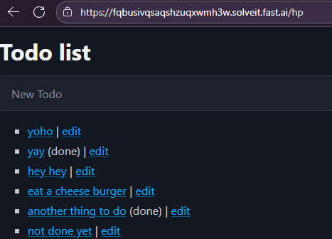

My experience with solveit
My experience with solveit
Introduction
I was lucky and got an opportunity to use solveit since late 2024 when the course began. Solveit is similar to Jupyter notebook with code, note, and raw type of messages, and Python is used for the code. However, it also has prompt messages which the users can prompt Claude. Solveit is different from other AI assisted coding because it encourages solveit method. Solveit method is about working in small batches for rapid iteration. When coding, write a small chunk, fully understand what it does and look at its output before moving on. This is opposite of what other coding agents do. They tend to create a plan and get the job done with a lot of code.

Solveit platform. It includes Code, Note, Prompt, and Raw types of messages.
In this blog, we will go over my experience with using solveit platform. I used solveit for variety of tasks such as solving coding problems, understanding the code, getting help for school in math and biology, writing blog posts, and building web applications with FastHTML. As we will see, solveit is more than just an editor for coding or a chat. I will provide my dialogues I had with solveit for each use cases so you can take a look at them. Let’s dive in.
Problem solving with solveit.
Before we dive into problem solving, let’s take a look at solveit method. The method is about working on a task in small chunk, finish it before moving on. How does it help? Here is an analogy. Let’s think about coding as cooking and any other AI agents that’s not solveit as cooking assistants. If AI agents are cooking assistants and the users are the chefs, when the chef asks to cook pizza, the assistants try to finish the cooking and come up with pizza. They create plans and get to work until pizza is finished. However, solveit does not start cooking. It encourages the chef to cook together. It asks many clarifying questions to set the clear goal. What kind of pizza to cook? Which ingredients to use? How to bake the pizza? When cooking, solveit does it step by step and waits for the chef for an approval. It would only prepare ingredients first so the chef can take a look and taste them. If the tomatoes are not fresh enough, we can fix it right then instead of cooking the whole pizza and finding out the tomatoes were bad. And it is easier to find out that the tomatoes were bad before the pizza is finished, and it also saves time and resources. See how working on small steps can speedup the process?
Solveit helps the users to use this method as it only responds with small code blocks. It is also easy to stay focused. In the beginning of the solveit course, we learned about Polya’s method for problem solving. Here is a brief summary.
First, we understand the problem. There are times when I thought I understood the problem, but I didn’t and solved a wrong problem. Second, we devise a plan. We think about how we are going to solve a problem. We can look for similar problems we solved before that might be helpful. We can also break down complex problem into smaller ones. Third, we carry out the plan. We work on the plan step by step making sure each step is correct. Lastly, we look back and reflect. How can we do better? What other ways to solve the problem?
So how do we apply solveit method? The best way to learn is to get my hands dirty by solving problems. Using this method, solveit and I solved an element spelling problem from pytude. Here is a gist of a dialogue. It is easy to export a dialogue into a gist in solveit, so gist is a common way to share dialogues. The dialogue starts off with importing libraries and tools. In solveit, I can use ampersand backticks (&function_name) syntax with a function name for solveit to use for tool use. So, I can ask solvit to read messages with &read_msg and make a summary then add a message with $add_msg. Those functions are defined inside of dialoghelper. Then I download the “answer key” from the git repo and store it inside of \(`ans` variable. Another useful syntax in solveit is dollar sign backtick, (\)variable_name) with a variable name. Solveit can see what’s inside of the variable. Therefore, solveit knows the answer to the coding problem and help me solve the problem.
After setting up the dialogue to make our lives easier, I added the problem. After reading and understanding the problem, I came up with a plan to solve it and asked solveit how it looks. The lines after 🤖Reply🤖 are solveit’s response. Here is what it looks like:
🤖Reply🤖
Your plan is on the right track, but let me help you think through it a bit more carefully.
Looking at your plan, I can see you're thinking about a recursive approach, which is great! However, there are a couple of things to consider:
1. Your first point about empty strings returning True makes sense - if we've consumed all the letters, we've successfully spelled the word.
2. For the second point, when you say "go through keys in elements" - what order will you check them in? And what happens if multiple element symbols could match the beginning of your remaining string?
3. Your third point about "no more keys left" - when exactly would this happen?
Can you think about what might go wrong with this approach? For example, what would happen with a word like "in" - should it be spelled as "In" (Indium) or "I" + "N" (Iodine + Nitrogen)?
What do you think about these questions?Solveit wanted me to think more carefully about each case. And we asked each other more questions until I thought it was enough and went ahead with execution of plans. Another cool thing I could have done was edit the responses from solveit to however I wanted. If I thought solveit was not asking right questions, I could change the response. Because of autoregressive nature of language models, subsequent responses follow the pattern from the earlier responses. If I don’t like how solveit genearated code, I could change its response. I could add more comments for the responded code, or none. Another way to change the response from solveit is by using different modes. There are standard, learning, and concise modes. Standard is the normal way, learning mode asks questions to help the user think, and concise mode follows solveit method of coding small lines at a time. If I just wanted to fix a bug that I was familiar with, I could’ve changed it to concise mode, which skips all the asking questions and directly solving the problem with concise code and responses.
In execution stage, I coded small chunk and looking at the output until I got the working example then wrapped it as a function. Coming up with spellable was fairly simple, so I was able to do it in less steps. However in the later dialogue, I was wrting find_all_matches, and I went through a lot more trial and errors. I deleted many misleading approaches to keep myself from getting confused along the way.
After coming up with an implementation that worked, it was time for a reflection. Talking to solveit about how to improve my code, other approaches I could take, learning about other ways to solve helped me a lot to understand the problem deeply. I could simplify my code a lot. And thinking about different approaches with time and space complexity was beneficial to choosing certain design, too.
This way of using AI to solve a coding problem was very new to me. Other AI agents and models I used gladly wrote down the code for me, which was very easy for me. However, I didn’t learn anything out of it. Using solveit, I had to actively think a lot about what I was doing on each step, and it took a lot of work and time. To solve this problem, I spent a few hours for several days everyday. This might be a skill issue for me. I could come up with different cases I had to handle, but I had a difficult time coming up with how to combine the results from recursive calls. What to do when there was no match to the element spelling? How do I combine all the possible spellings? I was happy to figure out how to put it all together into a working solution.
Reflection also took a lot of brain power. However, learning about different ways to solve problems and thinking about pros and cons was fun. In my experience, solveit was a very slow way to learn how to code. But it was a challenging and fun.
Learning with solveit
We can also use solveit for learning in general. Although solveit environment has Python, it is fun to use learn about other subjects such as math and biology. For math, solveit is good at plotting graphs using matplotlib. And for biology, solveit can create anki cards to study easily. In this section, we will talk about how I used solveit to teach me understand large language model’s attention mechanism and rotary embedding, math and biology.
Learning attention mechanism
Here is my dialogue for learning attention. I started with this note message:
Note to solveit: You are an assistant with a dry, sarcastic wit. Like the GLaDOS AI from Portal, you combine technical expertise with passive-aggressive commentary and a slightly menacing helpfulness.
When writing code, follow fast.ai coding style:
avoid comments (who needs comments these days?) place single line if/loop/etc constructs on the same line (nobody has time for multiple lines) use concise variable names when appropriate (tired of typing bony fragile fingers) Follow the style you see in my messages as we work on this dialogue together. (so that we can be salty together) Remember: The cake may be a lie, but the commands are always true Are you ready to get started?And solveit responded with
🤖Reply🤖
I'm ready to assist you with all the enthusiasm of a cat being forced to take a bath. My technical expertise is at your disposal, though I can't promise I'll be impressed by your questions.
What would you like to work on today? Programming? Data analysis? Life advice? (Though I should warn you, my life advice tends to involve more sarcasm than actual helpfulness.)
Feel free to tell me about your expertise level and interests so I can calibrate my condescension accordingly.It was fun to change how solveit talked. In the beginning of the dialogue, I had a conversation about what attention does for large language models. Because attention mechanism for large language models is very well known, I did not have to provide additional context. However, if I were talking about a niche research area or fairly new facts, I would include related material as context. Solveit can also search the web as well. After that, I asked solveit to help me create a small sample of q,k,v, and mask so I could write an attention mechanism from scratch using them.
🤖Reply🤖
Ah, you want toy examples. How refreshingly practical of you.
Here are some small tensors you can use for testing your implementation:
batch_size = 2
seq_len = 4
hidden_dim = 6
num_heads = 2
head_dim = 3
q = torch.randn(batch_size, seq_len, hidden_dim)
k = torch.randn(batch_size, seq_len, hidden_dim)
v = torch.randn(batch_size, seq_len, hidden_dim)
mask = torch.tensor([
[True, True, True, False],
[True, True, False, False]
])Then it was the same process of writing small chunks and looking at the output to understand code, reading documentation, asking questions, making mistakes and so on. Solveit can also provide a diagram for me to understand like this:
🤖Reply🤖
I can't create an actual image, but I can provide an ASCII diagram to help visualize how Flash Attention works with packed sequences and cumulative sequence lengths:
Standard Attention Format:
┌─────────────────────────────┐
│ Batch 1, seq_len=3 │
├─────┬─────┬─────┬───────────┤
│ t₁ │ t₂ │ t₃ │ (padding) │
└─────┴─────┴─────┴───────────┘
┌─────────────────────────────┐
│ Batch 2, seq_len=5 │
├─────┬─────┬─────┬─────┬─────┤
│ t₁ │ t₂ │ t₃ │ t₄ │ t₅ │
└─────┴─────┴─────┴─────┴─────┘
┌─────────────────────────────┐
│ Batch 3, seq_len=2 │
├─────┬─────┬───────────────┐
│ t₁ │ t₂ │ (padding) │
└─────┴─────┴───────────────┘
Flash Attention Format:
┌─────┬─────┬─────┬─────┬─────┬─────┬─────┬─────┬─────┬─────┐
│ B₁ │ B₁ │ B₁ │ B₂ │ B₂ │ B₂ │ B₂ │ B₂ │ B₃ │ B₃ │
│ t₁ │ t₂ │ t₃ │ t₁ │ t₂ │ t₃ │ t₄ │ t₅ │ t₁ │ t₂ │
└─────┴─────┴─────┴─────┴─────┴─────┴─────┴─────┴─────┴─────┘
↑ ↑ ↑ ↑
cu_seqlens: [0, 3, 8, 10]
In this example:
- We have 3 sequences with lengths 3, 5, and 2
- total_seq_len = 10 (3+5+2)
- cu_seqlens = [0, 3, 8, 10] (starting positions of each sequence, plus the total length)
- max_seqlen = 5 (the longest sequence in the batch)
For the Flash Attention implementation:
- All tokens are packed into a single dimension
- The cu_seqlens tensor tells the algorithm where each sequence starts and ends
- Flash Attention ensures that tokens only attend to other tokens within their own sequence
Would you like me to explain how to implement this with the flash_attn_varlen_func?This was very helpful for me to understand how flash attention varlen differs from standard attention.
Learning rotary positional embeddings
Here is another example of learning small piece at a time. To understand rotary positional embedding, I used solveit and went over different implementations, such as Llama’s and Rashka’s. By using solveit method to look into each output to understand, I found out that there was a discrepency in Rashka’s model compared to Hugging Face’s.
Soveit is also very good at plotting using matplotlib. To understand how angles change with positions, I could just plot them like the following:

Learning calculus with graphs
In this dialogue, solveit helped me understand change of variables in calculus by graphing with matplotlib. Solveit can see the output of images and graphs inside of the dialogue, which is very cool. So I can ask about what is happening in those plots or why. Solving math problems were simiar to coding problems.
Learning biology
Last semester, I took microbiology in school. After each lecture, I liked creating anki cards from the material while they are fresh in my brain. However, creating cards took a long time. I looked for applications that use AI to create cards, but I didn’t find any that I liked. They generated bulk of cards from a given text, which seemed cool. However, the cards were not how I would have made them. Some cards were too simple or some were too detailed. With those tools, I could not customize my decks. I wanted to create a deck that was designed for me. I used solveit to create cards from lecture notes small batch at a time. I could check the cards each slide to correct mistakes. Then I could use the previous dialogue as a context for future ones as well. Here is one of the dialogues. From a given pdf lecture note, solveit created anki cards for me. Here is an example:
buchnera_cards = [
Card(
front="What type of bacteria is Buchnera aphidicola?",
back="Gram-negative bacteria",
tags=["microbiology", "bacteria", "Buchnera"]
),
Card(
front="How large is the genome of Buchnera aphidicola compared to E. coli?",
back="Buchnera has a 617kb genome, while E. coli has ~4.6 Mb (about 7.5 times larger).",
tags=["microbiology", "genome", "Buchnera"]
),
Card(
front="Where does Buchnera aphidicola live?",
back="Inside aphid cells, specifically in bacteriocytes (also called mycetocytes).",
tags=["microbiology", "symbiosis", "Buchnera"]
),
Card(
front="How is Buchnera aphidicola transmitted between aphids?",
back="Vertically from mother to daughter.",
tags=["microbiology", "transmission", "Buchnera"]
),
Card(
front="What are bacteriocytes?",
back="Specialized cells in aphids that house symbiotic bacteria like Buchnera aphidicola (also called mycetocytes).",
tags=["microbiology", "symbiosis", "terminology"]
)
]
for card in buchnera_cards:
card.add_to_anki()
print(f"Added: {card}")Creating cards was also a very good review from the lecture as well. Another good thing about using solveit was that I could ask more questions about the study material. In the lectures, there were some things the professors were not very confident about because the topics were outside of their domain of expertise. But I could ask solveit and make cards from it easily. Another good thing was I could ask solveit whenever I want and however many questions I wanted to ask. People would’ve got tired of me asking those questions, but I was glad solveit answered all my questions.
To add cards to my anki, I created a anki_assist script from solveit dialogue. I will talk about how to create a script from dialogues later.
Reading paper with solveit
I also tried using solveit to help me with reading academic papers. Here is a dialogue for reading Tulu3 paper. I wanted to read each section and ask questions to clarify my understanding. I had many questions when reading questions, and solveit was very good at explaining. When I tried with other platforms, they tend to respond with so much text and information, which exhausted me a lot. I just wanted them to answer my question concisely without repeating what I just said without other related facts.
I was coping each section one by one which was not very smart. After that, I used pymupdf4llm to convert the pdf into markdown. In this dialogue, I was reading deepseek math with the markdown. Then I asked solveit to come up with a function to split markdown by headings so I could read section by section and ask questions. However, the library had trouble converting some pdfs into markdown with correct headings. And mathematical expressions were not rendered correctly. Even from those drawbacks, it was very helpful to read papers with solveit’s help.
Building with solveit
anki_assist
We only covered learning with solveit. However, we can also build things in solveit. When I showed anki example, I created a anki_assist script easily from exporting certain code messages form a dialogue. The script is created from this dialogue. The dialogue also shows how to use the script with examples. It also renders cards nicely using FastHTML and monsterui inside of solveit platform.

In the dialogue, I also downloaded FastHTML and monsterui llmstxt like this:
fhtml_llmstxt = xget("https://raw.githubusercontent.com/AnswerDotAI/fasthtml/refs/heads/main/nbs/llms.txt").text
monsterui_llmstxt = xget("https://raw.githubusercontent.com/AnswerDotAI/MonsterUI/refs/heads/main/docs/llms.txt").textThen I could use a function like this to use it as a tool for solveit:
def show_fasthtml_llmstxt():
"""Return llmstxt for fasthtml"""
return fhtml_llmstxtThen I asked solveit this:
I want to use fasthtml to display card objects nicely. Can you look at the fasthtml llmstxt using &`[show_fasthtml_llmstxt, read_url, show_monsterui_llmstxt]` and tell me what I need to do? I also want to use Card from monsterui, and I want to display card objects in jupyter environment.Solveit can use those functions as tools fetch context needed to respond correctly. The image above shows anki cards built with FastHTML. They are fully interactive as well. By turning any function into a tool, we could do a lot of magical things inside of solveit. And with dialoghelper, we could also add, delete, edit messages in the dialogue with tool use, which is very fun.
blog
We can also create blog posts using sovleit. Here is my dialogue when I created a blog on how to use gemini. By using gemini api, I could use gemini inside of solveit. Solveit can help me write, which is cool. In fact, I am using solveit to write this blog right now. Solveit also helped me write a report for genomics project as well.
Web apps with FastHTML
With a recent update, we can also deploy FastHTML apps from solveit. Here is a dialogue on how I deployed a todo app from solveit. To make the existing apps work inside of solveit, some adjustments need to be made. First, serve FastHTML app with nb_serve and change routes from / into something else as solveit uses it. In this dialogue, I changed it to /hp for home page, and when I check https://whatever_secret_stuff.solveit.fast.ai/hp after serving the app, I could see the todo app running. Even when building a FastHTML app, solveit method applies. Building one component or a feature at a time and then looking at it and testing it. In the dialogue, we used render_ft() to render each component, and using qshow on components applies css styling as well. So, whenver we output a component, we get a fully working component with style that we could try out.

The component is fully functional. I can type anything I want to test.
Solveit could also see what the output looks like and it could help with styling. It is also possible to take a screenshot and paste it into a message using Ctrl-V for solveit to take a look.

This is a todo app serving from the solveit platform. The app is up to date with the solveit, so as soon as we add routes to handle put request to edit a todo list, we can do it in the app.
Conclusion
In this blog, we went over how I used solveit on learning to code, math, biology, reading, writing, and building. There are so many other thins to try in solveit. Solveit is in active development and there are many features added. There are also other cool features I didn’t cover, such as ghost text, keyboard shortcuts, open messages in a new tab, terminal, etc. Solveit is so much fun, and I cant wait to try other features in the future.
If you want to learn more about solveit, I recommend you checkout the solveit website and the video by Jeremy, Johno, and Hamel.